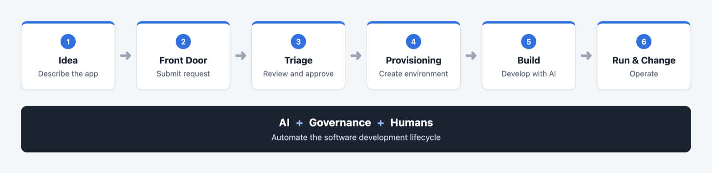
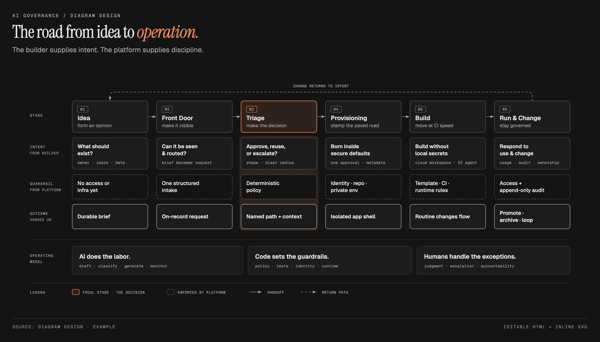
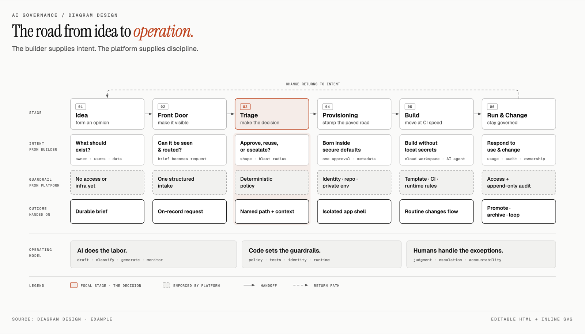

绘制杂志级图表
运行于Claude Code · Codex · Pi
产出HTML + 内联 SVG
杂志级图表，
你的设计师不再嫌弃。
50 种图表类型，由你的编码智能体绘成自包含的 HTML + SVG，再花约一分钟匹配你自己网站的品牌。不用 Figma，没有圆角框俗套。
曾登顶 GitHub Trending
17k+ star
开源 · MIT
模型不缺内容，
缺的是品味。
同样的内容画两遍：先是 Claude 自己画，再是 Claude 带着本技能画。
图 02a第一遍 · 无技能

图 02b用技能重绘


- 一个强调色，不是六个。颜色只指向唯一重要的那个节点，别无其他。
- 真实的层级。字重与分组承载语义，而非一道彩虹填充。
- 可读的结构。每个阶段回答同样的三个问题：意图、护栏、结果。横着读完一行，整个系统尽收眼底。
“模型早已理解内容。它缺的是品味，于是我把品味写了下来。”
Cathryn Lavery · 通用工具问的是“这个框放哪儿？”，它问的是“这个框配存在吗？”
你能得到什么
它运行在你已经在用的智能体里。不用打开新工具，不用导出任何东西。
50 种视觉类型
架构图、桑基图、热力图、分解轴测图、数据库结构等等。每一种都是有自身规则的真实类型，而不是同一种框样式换 50 张皮。
约 60 秒品牌匹配
把它指向你的网站。它读取你的配色与字体，并应用到它画的每一张图上。
自包含 HTML + SVG
一个文件。双击即开，离线可用。没有构建步骤、没有控制台、没有任何要托管的东西。
导入 draw.io、Mermaid 与 Excalidraw
把它指向来源文件，它会按目标场合需要的尺寸、细节与受众重绘（而非转换）。
可选的无障碍动效
当动效有助于讲解时，图表可以动起来。默认保持静态。
默认无障碍
屏幕阅读器会读出每张图表的标题与描述，而不是一块空白矩形。
五十种图表，一套体系
浏览线上画廊 →安装
从第一张卡开始。点击任意卡片即可复制。
任意智能体 · Cursor 等
# 一条命令，适配所有技能宿主
npx skills add cathrynlavery/diagram-design适用于 Cursor、Cline、Gemini CLI、Windsurf 等技能宿主。用 npx skills update diagram-design 更新。
Claude Code
# 添加 + 安装
/plugin marketplace add cathrynlavery/diagram-design
/plugin install diagram-design@diagram-design然后在 /plugin → Marketplaces 里开启一次自动更新。
Codex
# 添加 + 安装
codex plugin marketplace add cathrynlavery/diagram-design
codex plugin add diagram-design@diagram-designCodex 会在启动时刷新 Git 插件市场。
Pi
# 从 GitHub 安装
pi install https://github.com/cathrynlavery/diagram-design在已打开的 Pi 会话里运行 /reload。
GitHub Copilot
# 添加 + 安装
copilot plugin marketplace add cathrynlavery/diagram-design
copilot plugin install diagram-design@diagram-design用 copilot skill list 确认，然后直接开口要图。
Factory Droid
# 添加 + 安装
droid plugin marketplace add https://github.com/cathrynlavery/diagram-design
droid plugin install diagram-design@diagram-design --scope userDroid 按 commit 跟踪更新。更新后请开启新会话。
Qoder
# 克隆 + 安装
git clone https://github.com/cathrynlavery/diagram-design.git
qoder plugins install ./diagram-design安装后开启新任务。Qoder IDE 走 ZIP 上传，见 README。
Kiro 和 OpenCode 直接使用 skills/diagram-design 目录，见 README。想要可编辑安装？git clone 本仓库并软链 skills/diagram-design。保存在 ~/.diagram-design/profiles/ 的配置档案更新后依然保留。
然后，开口要就行
一句话描述你想要什么。没有语法，没有配置。
- >_“给我的应用画一张架构图：前端、后端、数据库、Redis 缓存。”
- >_“我要一张二季度项目的四象限图，按影响力对比工作量。”
- >_“把 diagram-design 接入 https://yoursite.com”
- >_“重绘这个 .drawio 文件，用在我的演示文稿里。”
# 复制一份脚手架再修改
cp skills/diagram-design/assets/template.html my-diagram.html> 给我的应用画一张架构图
读取你的品牌 · 选定类型：架构图
先说明计划，再动笔
写出 architecture.html 一个文件，离线可开